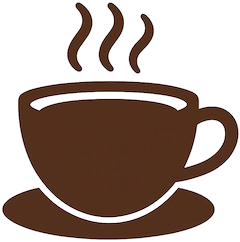
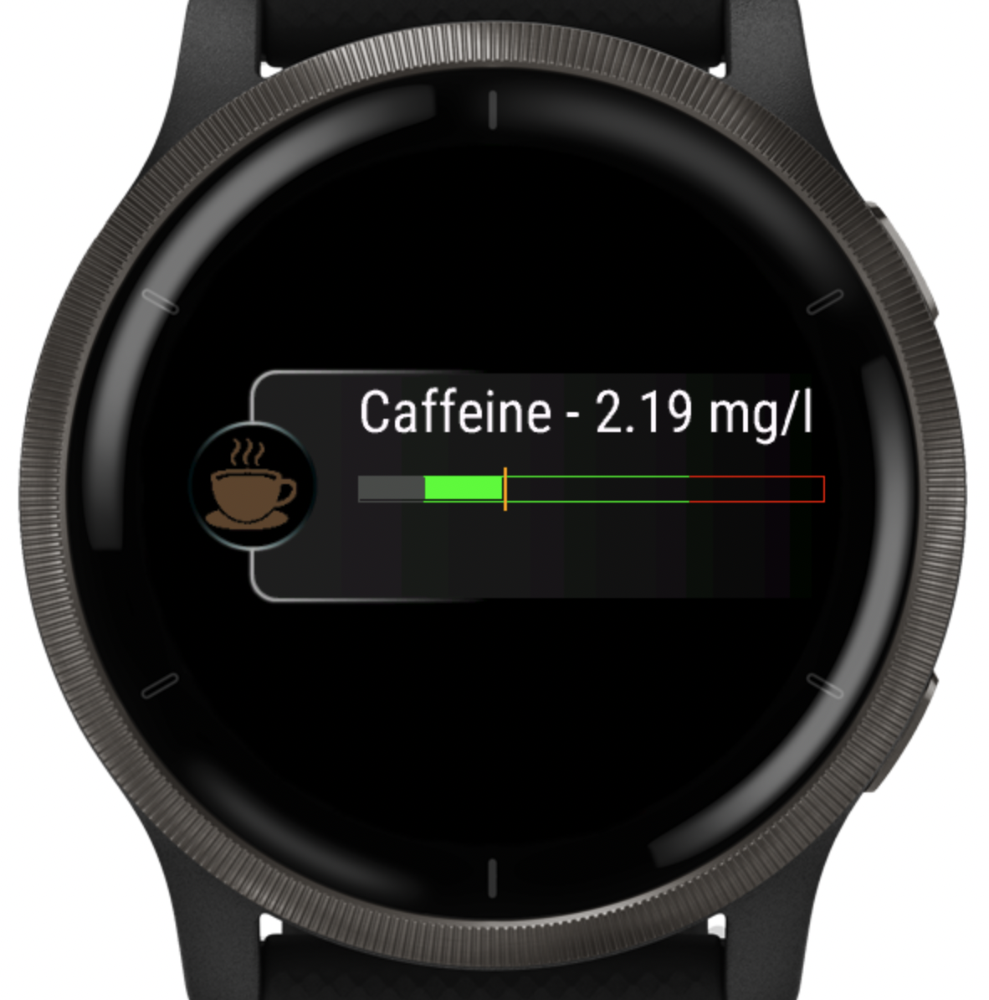
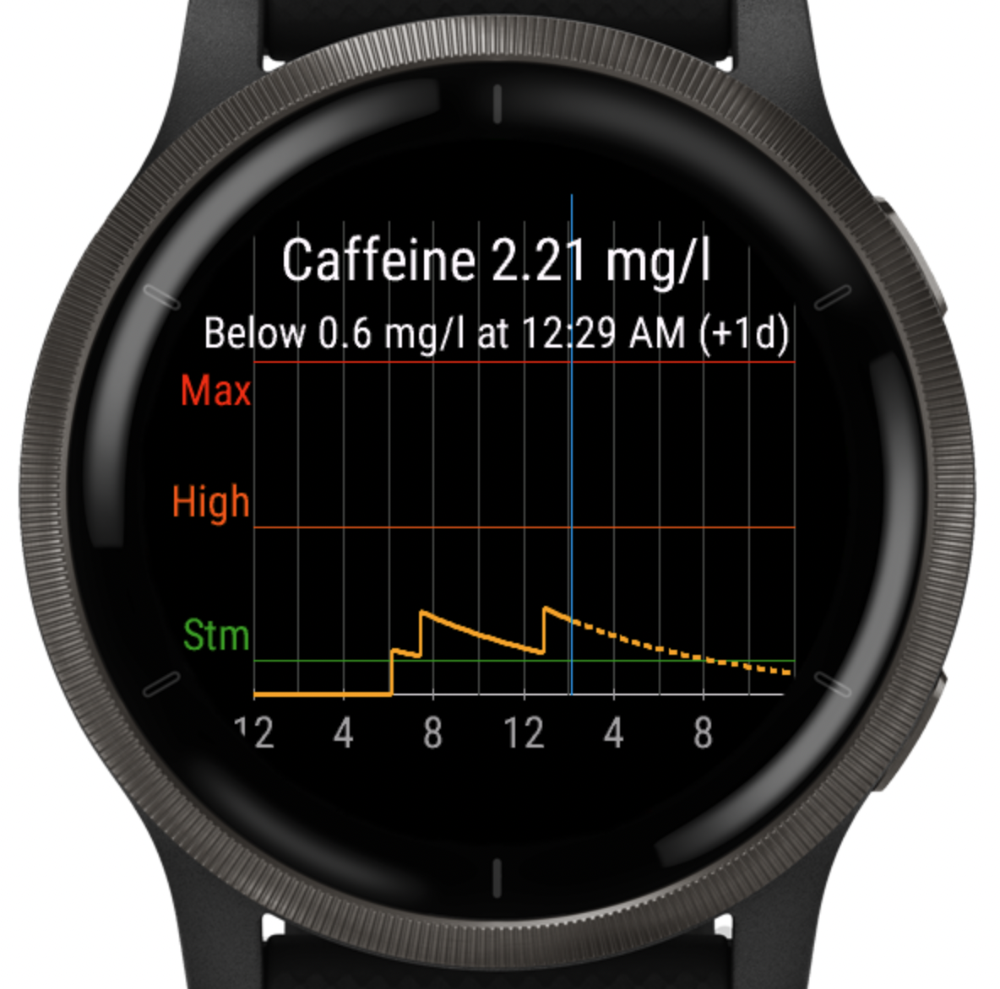
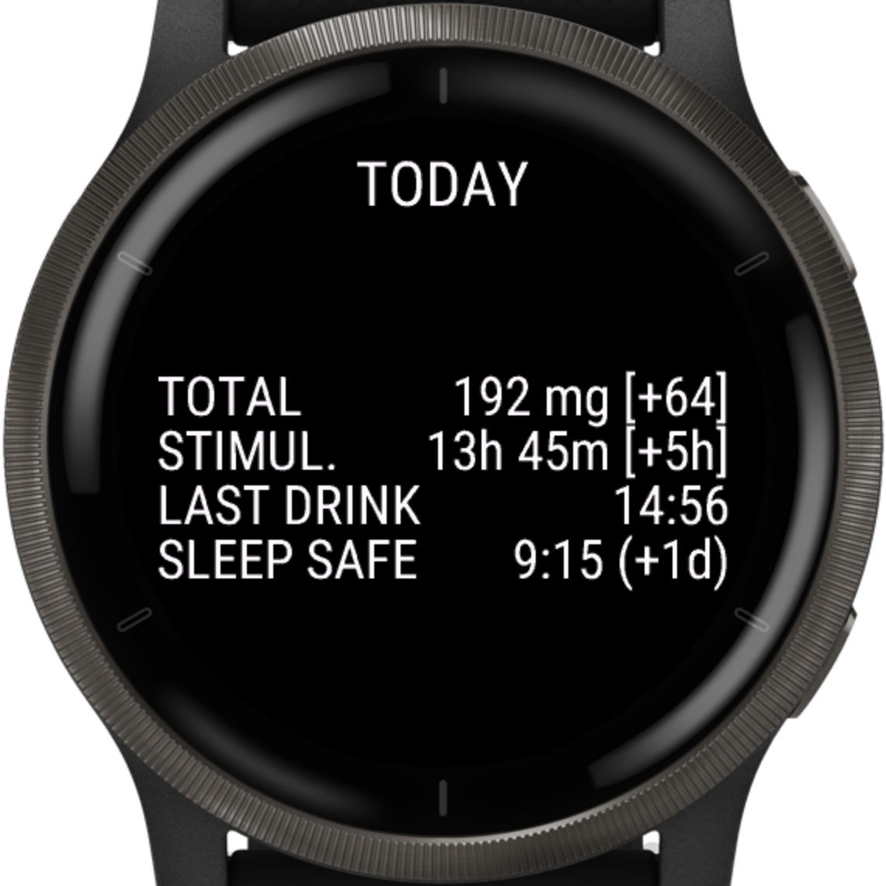
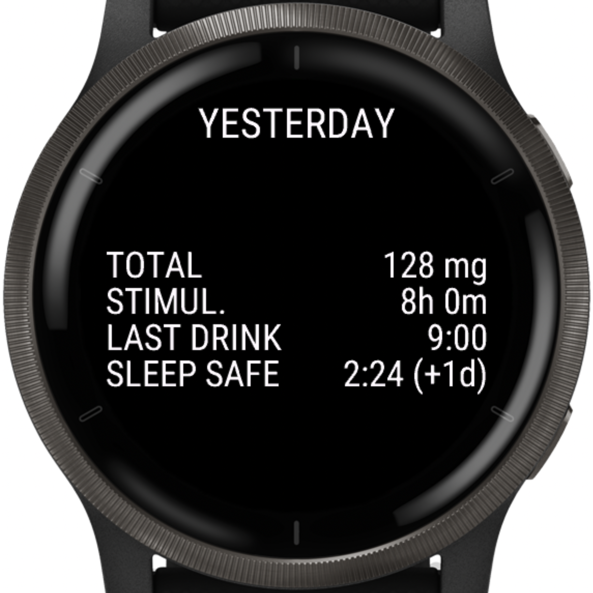
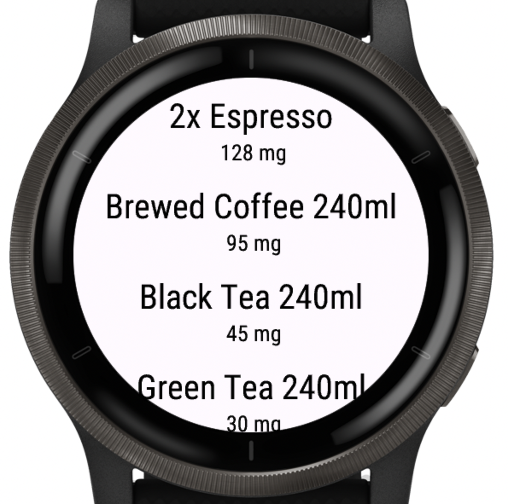
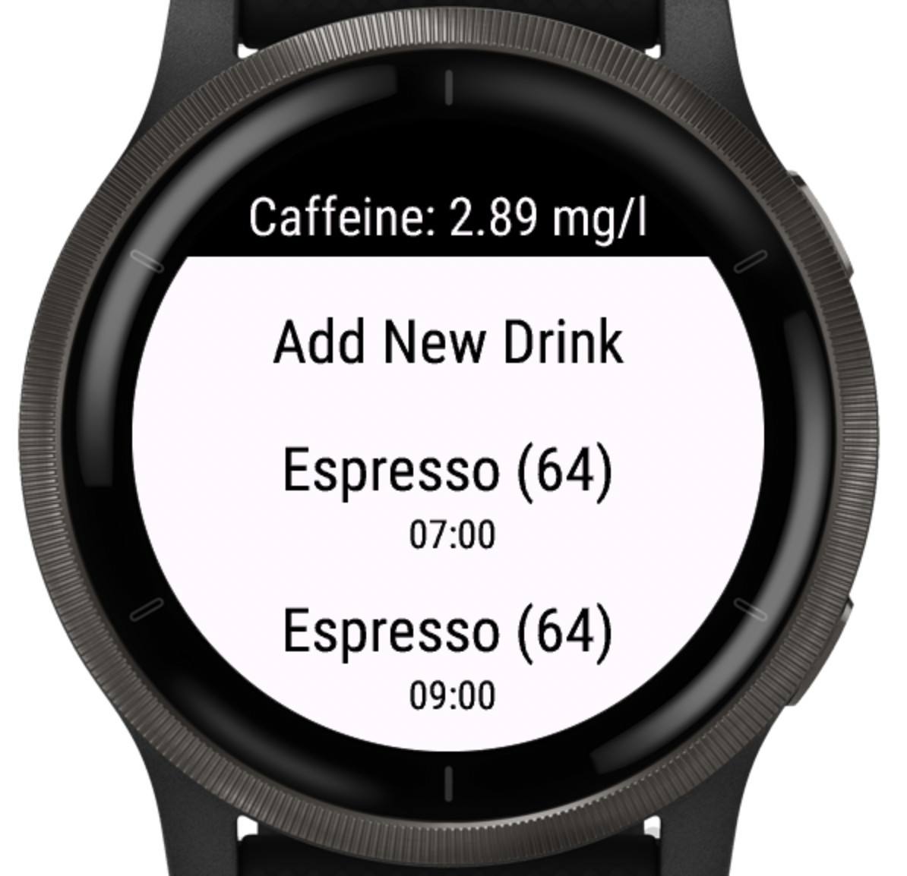
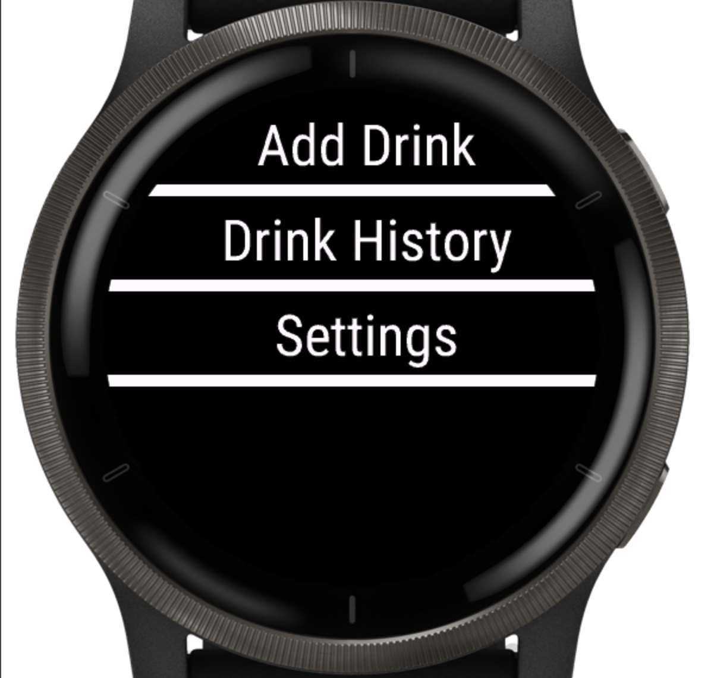
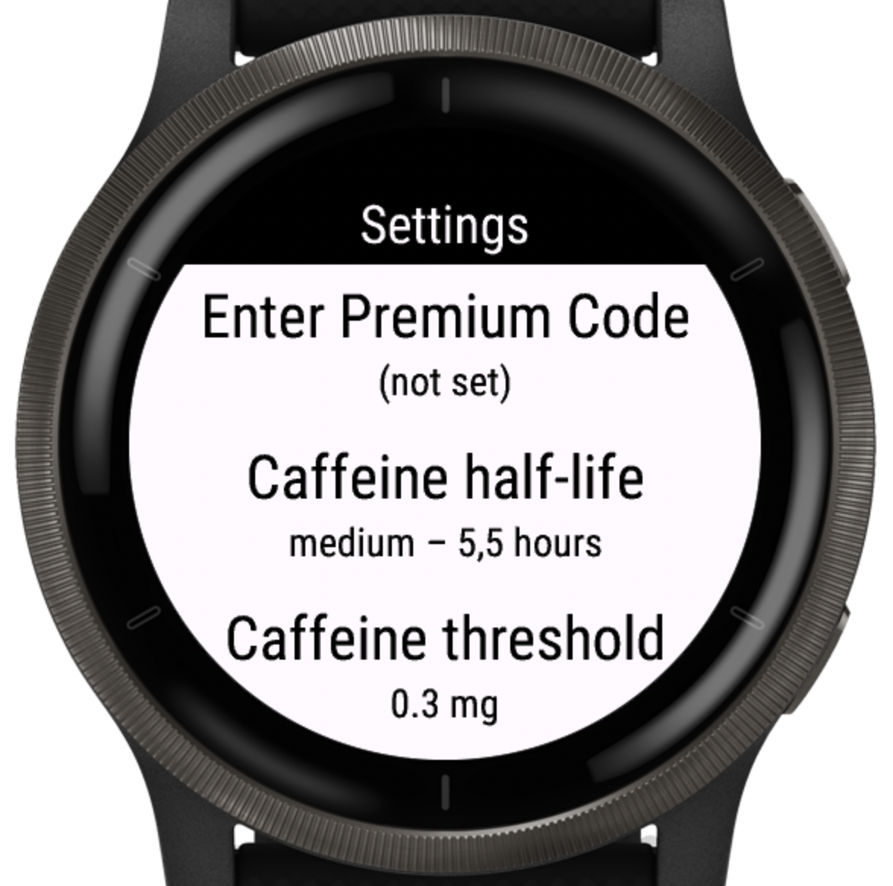

Caffeine Tracker
Track your real-time caffeine level and avoid sleep disruption. Know when caffeine is still active — and when it’s best to stop.


What Caffeine Tracker does
Caffeine Tracker is a simple yet powerful Garmin widget that helps you understand how caffeine behaves in your body — in real time.
Log drinks in seconds directly on your watch and see how much caffeine is still active based on your body weight and customizable metabolism.
What the levels mean
Caffeine Tracker shows your estimated caffeine level in mg/L and highlights practical guideposts: 0.6 (sleep-safe), 1.0 (Stm), 5.0 (High), 10.0 (Max).
Want the details? Read how it works →
Core features (Free)
- Real-time caffeine level based on body weight
- Automatic background updates every 5 minutes
- Quick drink logging on the watch
- Glance view & watch-face complications
Premium features
- Sleep-safe prediction
- Adjustable caffeine half-life
- Custom sleep-impact threshold
-
Custom drinks & caffeine amounts
Example: Energy Drink 500 ml — 160 mg - Advanced daily statistics
How to unlock Premium
- Open Caffeine Tracker on your watch.
- Go to Settings → Unlock Premium.
- Scan the QR code displayed on your watch.
- Complete the purchase.
- Enter the unlock code you receive by email.
Daily statistics (Premium)
Get clear, comparable insights for each day. Instantly see how today differs from yesterday and how caffeine impacts your sleep window.
- Total caffeine intake per day
- Time under stimulation (above 1 mg/L)
- Time of last caffeine intake
- Time when caffeine dropped below sleep threshold
- Today vs. yesterday comparison


Screenshots



